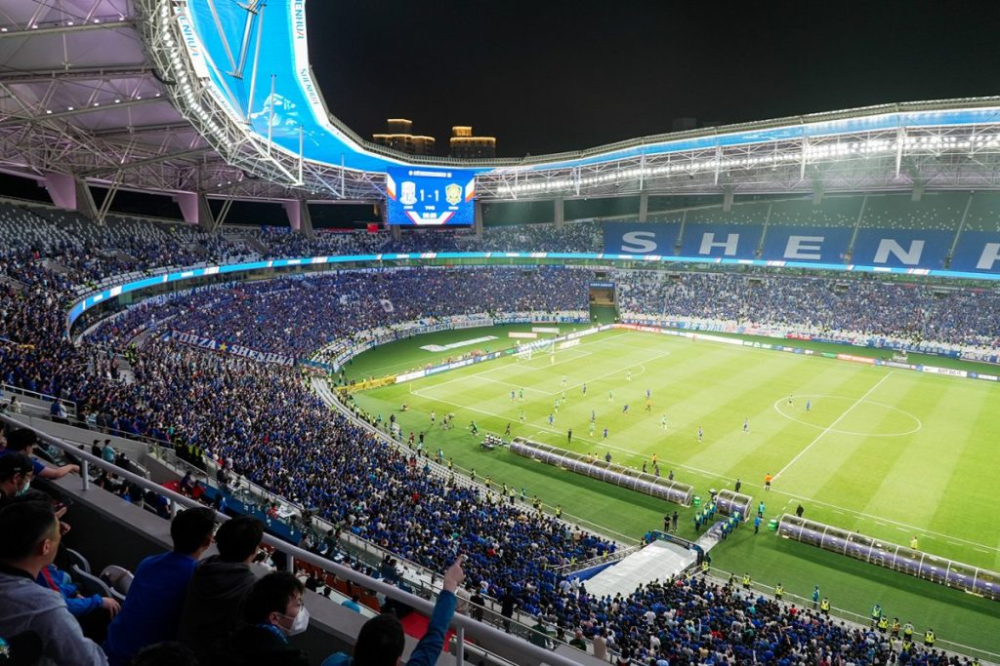

Victor Nadebu
October 3,
2025

The roar of 80,000 fans at Shanghai
Stadium on September 21, 2025, wasn’t just about the football match between
Shanghai Shenhua and Chengdu Rongcheng – it was also a live demonstration of
how telecom carriers are tackling one of their most pressing challenges:
converting advanced network capabilities into revenue.
Huawei brought the international
media to witness this implementation firsthand, offering many of us in the
press corps our first experience of Chinese football culture. As supporters
cheered in waves of blue and white, capturing moments on their phones and
sharing videos (despite the crushing crowd density), China Mobile Shanghai’s
newly deployed 5G-A network monetisation strategy was
being tested in real-time, powered by Huawei’s GainLeap
solution and intelligent wireless infrastructure.
From the media section, the scale of
the technical challenge became apparent – ensuring 80,000 simultaneous users
could stream, upload, and transact without network degradation. This was
something that required more than additional bandwidth.
China Mobile Shanghai has become the
first carrier in China to launch a differentiated 5G-A experience package,
marking what industry observers see as a shift in how telecom operators might
address revenue growth in saturated markets.
The “5G-A Exclusive Package for
Shenhua Football Fans” is a way to transform the elastic capabilities of
5G-Advanced networks into tangible value that users can perceive and are
willing to pay for.
The technical foundation for this
5G-A network monetisation strategy relies heavily on
Huawei’s technology portfolio, from the GainLeap
solution that identifies premium subscribers, to the AI-powered intelligent
wireless boards that optimise network performance.
The partnership between China Mobile
Shanghai and Shanghai Shenhua Football Club offers approximately 200,000
football fans an annual package that combines network performance guarantees
with fan-specific benefits.
Subscribers receive network
acceleration on 5G-A, access to all matches via the Migu streaming service,
unlimited video ringback tone downloads, and Shanghai
Shenhua Football Club merchandise.
This approach to 5G-A network monetisation addresses what China Mobile Shanghai
identifies as an important pain point for the telecommunications industry: how
to drive quality growth when user acquisition has reached its ceiling. Rather
than competing solely on price or basic connectivity, the package creates value
through enhanced experiences in specific use-cases.
For Shanghai Stadium, China Mobile
Shanghai implemented an elastic, scalable network capable of handling massive
concurrent demand. During the match, with 80,000 users accessing the network
simultaneously, 5G-A package subscribers can achieve download speeds of up to
600 Mbps.
The necessary technical foundation
relies on Huawei’s GainLeap solution, which lets the
network identify 5G-A subscribers and allocates them a high-speed 3CC
(three-component carrier) channel. The differentiation is key to the 5G-A
network monetisation model – creating measurable
performance differences between standard and premium subscribers.
Behind the scenes, Huawei’s
AI-powered intelligent wireless boards play a central role. They integrate
on-board communications capabilities with artificial intelligence to perceive
network service types, user experience goals, device characteristics, and
resource status, in milliseconds.
According to test data provided by
China Mobile Shanghai, they have helped result in QR code scanning latency
reduced by 47%, WeChat uploading time shortened by 25%, live streaming speeds
increased by 27%, and high-definition video ratios increased by 11%.
To support the high concurrent
demand during events, China Mobile Shanghai and Huawei conducted comprehensive
network upgrades at the stadium. The lower stands received 32 new 2.6 GHz and
4.9 GHz pRRUs (passive remote radio units), more than
doubling overall network capacity. Seven escalator entrances each received a
4.9 GHz EM device to eliminate coverage dead spots.
On match days, more than 40
engineers are stationed onsite for real-time network monitoring and dynamic optimisation. Outside of the stadium, China Mobile Shanghai
has achieved continuous 5G-A coverage in the area inside Shanghai’s Outer Ring
Road, the five new towns further out, and 21 metro lines in the city.
For fans at the match, the
differentiated service manifested practically. The high bandwidth and
business-level assurance capabilities enabled quick mobile payments for drinks,
snacks, and souvenirs onsite. Users could share video highlights in real time
without lag, even during peak moments when thousands of fans uploaded data
simultaneously.
The ability to instantly see likes
and comments from friends while still in the stadium represents the kind of
enhanced experience that China Mobile Shanghai is betting users will value
enough to pay a premium for. Whether this bet pays off commercially remains to
be seen, but the technical execution at the September 21 match demonstrated
that the infrastructure delivers on its promises.
The initiative raises questions
about the future of 5G-A network monetisation
strategies in the telecommunications industry. Traditional models have
struggled to justify the massive infrastructure investments required for 5G and
latterly, 5G-Advanced networks. By creating tiered experiences tied to specific
user communities – in this case, football fans – carriers may have found a way
to differentiate services beyond simple speed tiers.
The approach also represents a test
case for how deeply integrated AI capabilities in network infrastructure can
enable new business models. The intelligent wireless boards’ ability to make
millisecond-level decisions about resource allocation is what makes the
performance differentiation technically feasible at scale.
China Mobile Shanghai’s target of
serving 200,000 Shenhua fans provides a measurable benchmark for assessing
commercial viability.
As telecommunications companies
globally grapple with how to monetise increasingly
expensive network upgrades, China Mobile Shanghai’s experiment with
community-specific, experience-based packages may offer insights for the
industry’s evolution beyond traditional connectivity provision.